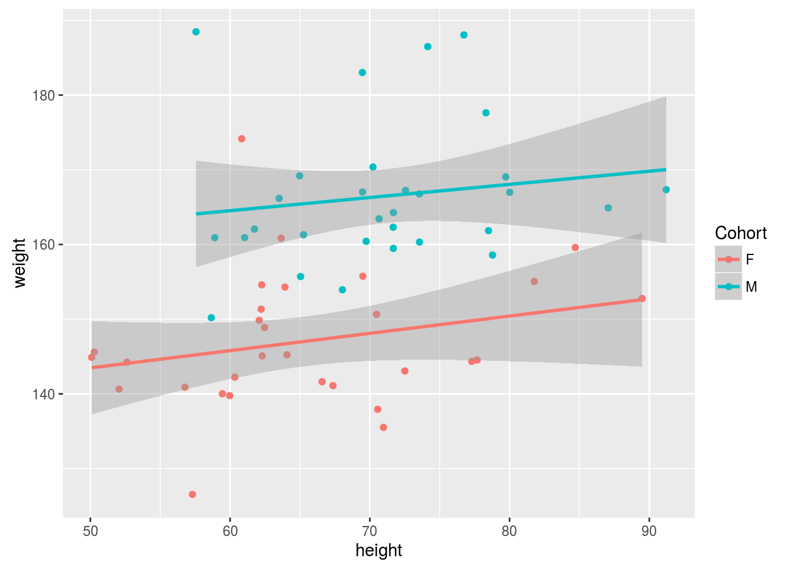
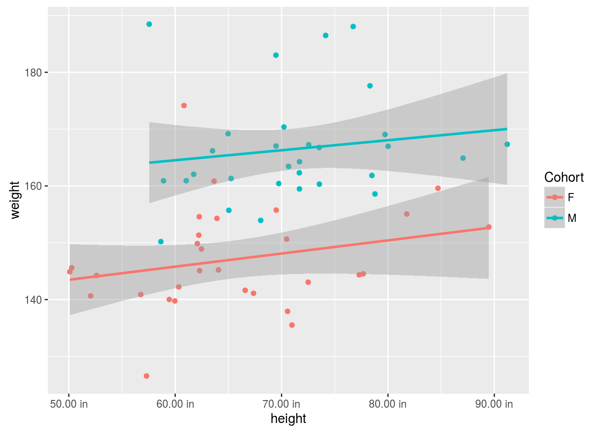
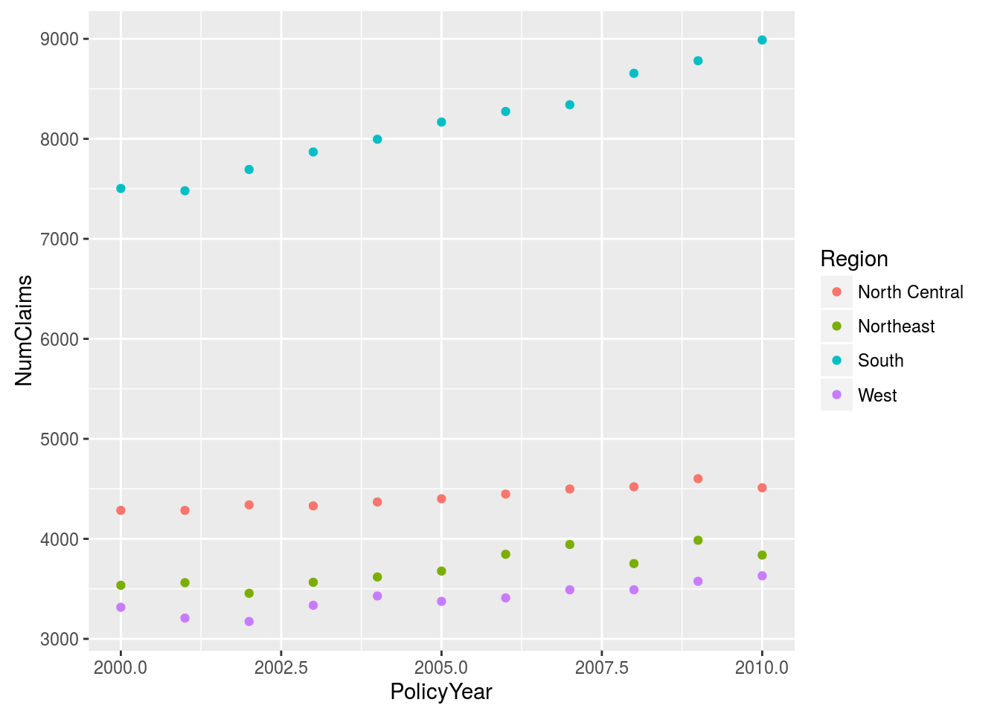
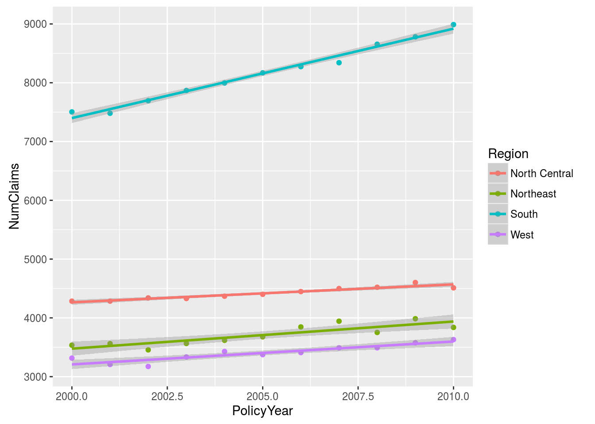
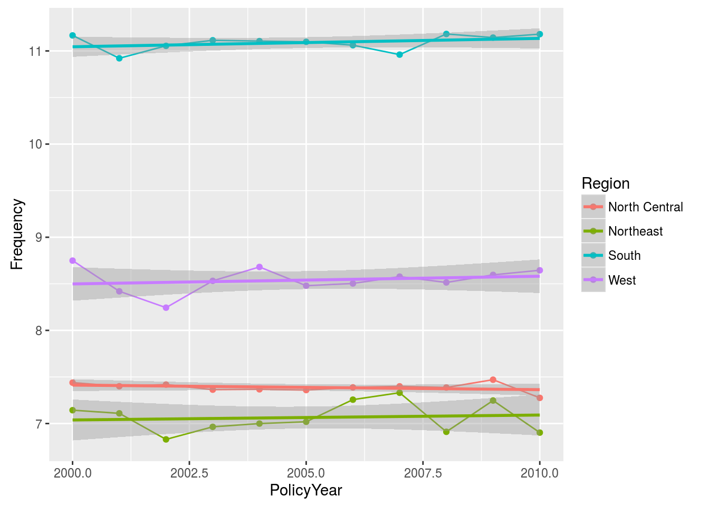

Chapter 11 Advanced Visualization
- ggplot2
- Maps
11.1 ggplot2
ggplot2 developed by Hadley Wickham, based on the “grammar of graphics”
Particularly well suited for multi-dimensional, multivariate analysis.
Requires 3 things:
- Data
- Mapping
- Geometric layers
11.1.1 Data
set.seed(1234)
N <- 30
df <- data.frame(Cohort = c(rep("F", N), rep("M", N))
, weight = c(rnorm(N, 150, 10), rnorm(N, 172, 10))
, height = c(rnorm(N, 64, 10), rnorm(N, 70, 10))
)
library(ggplot2)
basePlot <- ggplot(df)Notice that we assigned the result of the function call to an object called basePlot. This means we don’t automatically get output. Take a bit of time to have a look at what’s contained in the basePlot object.
11.1.2 Mapping
Mappings bind data to visual elements. These are added with the ggplot2::aes function. We add the mapping to the plot object with the addition operator.
basePlot <- basePlot + aes(x = height, y = weight)We can map other aesthetic elements, as well. We’ll also map the color of the graphic elements to the Cohort data element.
basePlot <- basePlot + aes(color = Cohort)11.1.3 Adding layers
We’re almost there. Although we have data and we’ve mapped to elements of a coordinate system, we haven’t specified what the visual elements should be. The geom_* family of functions add geometric shapes.
basePlot <- basePlot + geom_point()
basePlot
11.1.4 Typical geoms
- geom_line
- geom_point
- geom_bar
- geom_histogram
- geom_density
- geom_boxplot
Lots of others for things like area plots, step functions, dotplots, violin plots, errorbars, etc.
11.1.5 One step
Typically we don’t do this in steps.
plt <- ggplot(df, aes(x = height, y = weight, color = Cohort)) + geom_point()
plt11.1.6 Nothing wrong with adding two layers
ggplot(df, aes(x = height, y = weight, color = Cohort)) + geom_point() + geom_rug()ggplot(df, aes(x = height, y = weight, color = Cohort)) + geom_point() + geom_density2d()11.1.7 Facets
Facets split the data into groups and draws a different plot for each group.
plt <- ggplot(df, aes(x = height, y = weight, color = Cohort)) + geom_point() + facet_wrap(~ Cohort)
plt <- ggplot(df, aes(x = height, y = weight, color = Cohort)) + geom_point() + facet_wrap(~ weight)
plt11.1.8 Statistical transformations
We can also add all manner of statistical smoothers.
plt <- ggplot(df, aes(x = height, y = weight, color = Cohort)) + geom_point() + geom_smooth(method = "lm")
plt
See ? stat_smooth for more on smoothers.
11.1.9 Scales
Scales control how things render on the plot. We must scale our numbers to the plotting device (typically a section of a computer screen.) We can also map things like color and axes to data values and control formatting.
plt + scale_x_continuous(labels = scales::comma)
plt + scale_x_continuous(labels = scales::unit_format(unit = "in", nsmall = 2))
Very detailed topic, particularly when we start talking about color. Your specific problem will likely require a bit of research and experimentation. StackOverflow.com is your friend.
11.1.10 Other visual elements
Non-data elements are things like labels. Here’s a sample of a few:
xlab(),ylab()->plt + ylab("This is my y label") + xlab("Here is an x label")ggtitle()->plt + ggtitle("Title of my plot")labs()->plt + labs(x = "x-axis title", title = "My title")theme_bw(),theme_minimal()->plt + theme_bw()- The
theme()function gives complete control over all non-data related visual elements - Check out the
ggthemespackage
We won’t cover this here.
11.2 Questions
- Create a scatter plot for policy year and number of claims
- Color each point based on region
- Add a linear smoother. Which region is showing the greatest increase in claims?
- Form the policy frequency by taking the ratio of claims to policies. Plot this.
Extra credit:
- Use the state data to create a time series number of claims. Facet by region.
11.3 Answers
library(raw)
data("RegionExperience")
plt1 <- ggplot(RegionExperience, aes(x = PolicyYear, y = NumClaims)) + geom_point()
plt1plt2 <- plt1 + aes(color = Region)
plt2
plt3 <- plt2 + stat_smooth(method = "lm")
plt3
RegionExperience$Frequency <- with(RegionExperience, NumClaims / NumPolicies)
plt4 <- ggplot(RegionExperience, aes(x = PolicyYear, y = Frequency, color = Region)) + geom_point() + geom_line() + stat_smooth(method = lm)
plt4
data("StateExperience")
pltExtra <- ggplot(StateExperience, aes(x = PolicyYear, y = NumClaims, color = Postal)) + geom_point() + geom_line()
pltExtra + facet_wrap(~ Region)11.4 Maps!
library(maps)
map('state')11.4.1 Hurricanes
library(raw)
data(Hurricane)
dfKatrina = subset(Hurricane, Name == 'KATRINA')
dfKatrina = dfKatrina[dfKatrina$Year == max(dfKatrina$Year), ]
dfHugo = subset(Hurricane, Name == 'HUGO')
dfHugo = dfHugo[dfHugo$Year == max(dfHugo$Year), ]
dfDonna = Hurricane[Hurricane$Name == 'DONNA', ]
dfDonna = dfDonna[dfDonna$Year == max(dfDonna$Year), ]## Warning in max(dfDonna$Year): no non-missing arguments to max; returning -
## Infmap('state')
points(dfKatrina$Longitude, dfKatrina$Latitude, pch=19, col = 'red')
points(dfHugo$Longitude, dfHugo$Latitude, pch = 19, col = 'blue')
points(dfDonna$Longitude, dfDonna$Latitude, pch = 19, col = 'green')11.4.2 Choropleths the easy way
library(choroplethr)## Loading required package: acs## Loading required package: stringr## Loading required package: methods## Loading required package: plyr##
## Attaching package: 'plyr'## The following object is masked from 'package:maps':
##
## ozone## Loading required package: XML##
## Attaching package: 'acs'## The following object is masked from 'package:base':
##
## applylibrary(choroplethrMaps)
mapData <- subset(StateExperience, PolicyYear == 2010)
mapData$value <- mapData$NumClaims
mapData$region <- tolower(mapData$Fullname)
state_choropleth(mapData)11.4.3 Choropleths the harder way
states_map <- map_data("state")
plt <- ggplot(subset(StateExperience, PolicyYear == 2010), aes(map_id = Fullname))
plt <- plt + geom_map(aes(fill = NumClaims), color = "black", map = states_map)
plt <- plt + expand_limits(x = states_map$long, y = states_map$lat)
plt <- plt + coord_map()
plt11.4.4 Choropleths the really hard way
plt <- ggplot(StateExperience, aes(map_id = Fullname))
plt <- plt + geom_map(aes(fill = NumClaims), color = "black", map = states_map)
plt <- plt + expand_limits(x = states_map$long, y = states_map$lat)
plt <- plt + facet_wrap( ~ PolicyYear)
plt <- plt + coord_map()
plt11.5 Summary
ggplot2is difficult at first, but will repay your investment.- Works very well with grouped data to color/facet points.
- Fine-tuning things like axis labels can be a headache, but will get easier. Yes, Excel makes it easier to add data labels and change colors.
ggplot2makes it easier to work with data. - Maps tend to be a killer viz. They use the same point and area logic as any other graphic.
11.6 Reference
- http://www.rstudio.com/wp-content/uploads/2015/03/ggplot2-cheatsheet.pdf
- R Graphics Cookbook by Winston Chang
- http://vita.had.co.nz/papers/layered-grammar.html